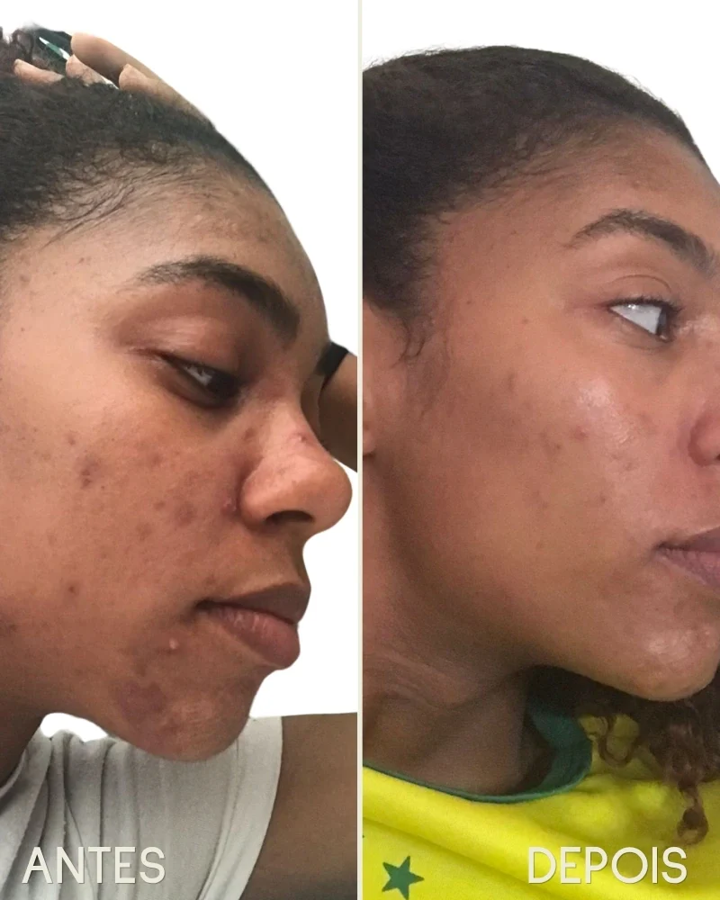
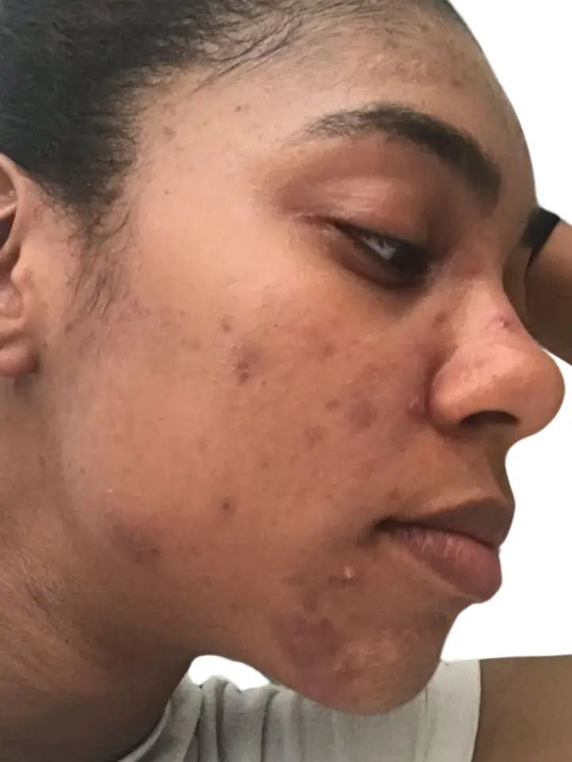
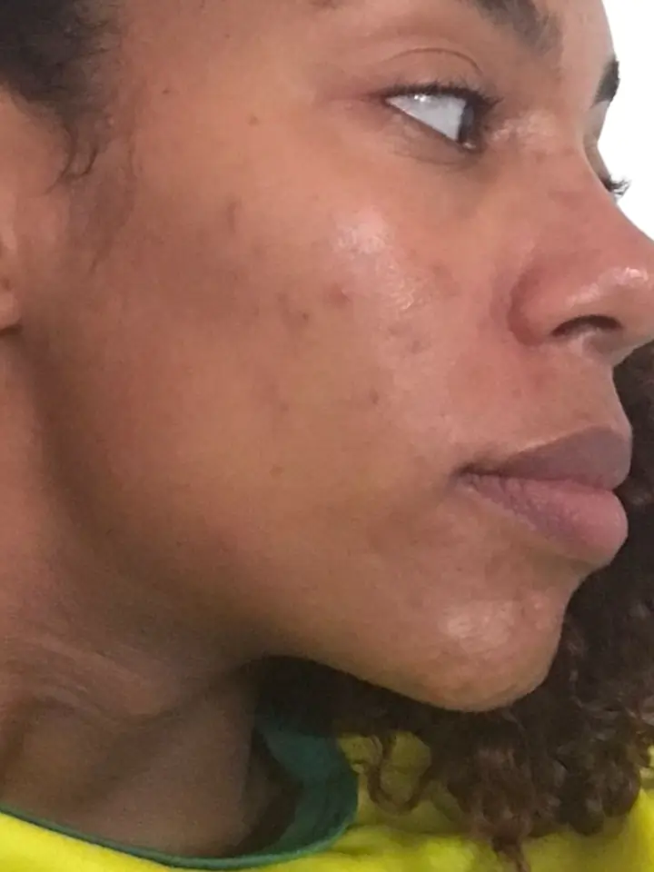

<!DOCTYPE html>
<html lang="pt-BR">
<head>
<meta charset="UTF-8">
<meta name="viewport" content="width=device-width, initial-scale=1.0">
<title>EUBE — Diagnóstico IRE®</title>
<link rel="preconnect" href="https://fonts.googleapis.com">
<link rel="preconnect" href="https://fonts.gstatic.com" crossorigin>
<link href="https://fonts.googleapis.com/css2?family=Sulphur+Point:wght@300;400;700&family=Jost:wght@300;400;500;600&display=swap" rel="stylesheet">
<style>
:root{
  --vinho:#621513;--vinho-deep:#48100f;--terracota:#F4633A;
  --offwhite:#EDEBDC;--agua:#A4C9CB;--wa:#25D366;
  --muted:rgba(98,21,19,.5);--line:rgba(98,21,19,.12);
  --card:rgba(98,21,19,.04);--agua-dim:rgba(164,201,203,.15);
}
*{box-sizing:border-box;margin:0;padding:0}
html,body{height:100%}
body{font-family:'Jost',sans-serif;background:var(--offwhite);
  color:var(--vinho);min-height:100vh;display:flex;align-items:flex-start;justify-content:center;padding:52px 22px 80px;-webkit-font-smoothing:antialiased}
.wrap{width:100%;max-width:560px}

/* topbar */
.topbar{margin-bottom:32px}
.etapa-row{display:flex;justify-content:space-between;align-items:center;margin-bottom:10px}
.etapa{font-size:.68rem;letter-spacing:.22em;text-transform:uppercase;color:var(--vinho);font-weight:600}
.etapa-n{font-size:.68rem;color:rgba(98,21,19,.45);font-weight:400}
.pbar{height:2px;background:var(--line)}.pfill{height:2px;background:var(--vinho);width:0;transition:width .5s cubic-bezier(.2,.7,.3,1)}

/* type */
.eyebrow{font-size:.7rem;letter-spacing:.26em;text-transform:uppercase;font-weight:600;margin-bottom:20px}
.eyebrow-ora{color:var(--terracota);position:relative;padding-bottom:14px;display:inline-block}
.eyebrow-ora:after{content:"";position:absolute;left:0;bottom:0;width:32px;height:2px;background:var(--terracota)}
.eyebrow-agua{color:var(--vinho)}
h1{font-family:'Sulphur Point',sans-serif;font-weight:700;font-size:2.5rem;line-height:1.16;margin-bottom:18px;color:var(--vinho)}
h2{font-family:'Sulphur Point',sans-serif;font-weight:700;font-size:1.85rem;line-height:1.12;margin-bottom:14px;color:var(--vinho)}
.hl{color:var(--vinho)}
.hl-ora{color:var(--terracota)}
.h1-sub{display:block;font-family:'Jost',sans-serif;font-weight:300;font-size:1.35rem;line-height:1.3;color:rgba(98,21,19,.6);margin-top:16px}
.lead{font-size:1.08rem;line-height:1.6;color:rgba(98,21,19,.72);margin-bottom:12px;font-weight:300}
.proof{font-size:.9rem;color:var(--vinho);font-weight:500;margin-bottom:28px}
.qtext{font-family:'Sulphur Point',sans-serif;font-weight:700;font-size:1.55rem;line-height:1.18;margin-bottom:8px;color:var(--vinho)}
.qhelp{font-size:.93rem;color:rgba(98,21,19,.5);margin-bottom:20px;font-weight:300}

/* buttons */
.cta{display:inline-block;width:100%;text-align:center;text-decoration:none;cursor:pointer;background:var(--terracota);color:var(--offwhite);
  border:none;border-radius:0;font-family:'Jost',sans-serif;font-weight:600;font-size:1.05rem;letter-spacing:.01em;
  padding:18px 24px;transition:transform .12s,filter .15s;margin-top:4px}
.cta:hover{filter:brightness(1.08)}.cta:active{transform:translateY(1px)}.cta:disabled{opacity:.38;cursor:not-allowed}

/* options */
.opt{display:block;width:100%;text-align:left;cursor:pointer;border-radius:0;background:rgba(98,21,19,.03);color:var(--vinho);
  border:1.5px solid var(--line);font-family:'Jost',sans-serif;font-weight:400;font-size:1.02rem;
  line-height:1.32;padding:14px 16px;margin-bottom:9px;transition:border-color .15s,background .15s,color .15s}
.opt:hover{border-color:var(--vinho);background:rgba(98,21,19,.06)}
.opt.sel{background:var(--vinho);border-color:var(--vinho);color:var(--offwhite);font-weight:500}
.opt .chk{display:inline-flex;align-items:center;justify-content:center;width:16px;height:16px;
  border:1.5px solid var(--muted);margin-right:12px;vertical-align:-2px;flex-shrink:0;transition:all .15s}
.opt.sel .chk{background:var(--offwhite);border-color:var(--offwhite)}
.opt.sel .chk:after{content:"✓";font-size:.7rem;color:var(--vinho)}

/* fields */
.field{margin-bottom:14px}
.field label{display:flex;align-items:center;gap:8px;font-size:.78rem;letter-spacing:.06em;text-transform:uppercase;color:var(--vinho);margin-bottom:7px;font-weight:600}
.field .opt2{font-size:.7rem;color:var(--muted);text-transform:none;letter-spacing:0;font-weight:400}
.field input{width:100%;background:#fff;border:1.5px solid var(--line);border-radius:0;color:var(--vinho);
  font-family:'Jost',sans-serif;font-size:1.05rem;padding:13px 15px;transition:border-color .15s}
.field input::placeholder{color:rgba(98,21,19,.28)}.field input:focus{outline:none;border-color:var(--vinho)}
.err{color:var(--terracota);font-size:.83rem;margin-top:6px;min-height:1em}
.privacy{font-size:.79rem;color:var(--muted);line-height:1.45;margin-top:14px;font-weight:300}
/* intro tráfego pago: foto com prova + botão D */
.intro-photo{position:relative;width:100%;aspect-ratio:4 / 3;overflow:hidden;margin:18px 0;background:var(--vinho)}
.intro-photo img{width:100%;height:100%;object-fit:cover;object-position:center center;display:block}
.intro-photo .cap{position:absolute;left:0;right:0;bottom:0;padding:24px 16px 12px;background:linear-gradient(transparent,rgba(72,16,15,.85));color:var(--offwhite);font-size:.88rem;line-height:1.35;font-weight:300}
.intro-photo .cap b{color:#fff;font-weight:600}
.cta-d-wrap{box-shadow:0 8px 24px rgba(244,99,58,.35);margin-top:4px}
.cta-d{display:block;width:100%;text-align:center;background:var(--terracota);color:var(--offwhite);font-weight:700;font-size:1.15rem;padding:18px;border:none;cursor:pointer;font-family:'Jost',sans-serif}
.cta-d-bar{background:var(--vinho);color:var(--offwhite);text-align:center;font-size:.76rem;padding:9px;font-weight:400;letter-spacing:.02em}
.cta-d-bar b{color:var(--terracota);font-weight:600}

/* before/after slot */
.ba-wrap{display:grid;grid-template-columns:1fr 1fr;gap:10px;margin:20px 0}
.ba-slot{position:relative;aspect-ratio:3/4;border:1.5px solid var(--line);background:rgba(98,21,19,.03);
  display:flex;flex-direction:column;align-items:center;justify-content:center;gap:8px;overflow:hidden}
.ba-slot:before{content:none}
.ba-tag{position:absolute;bottom:10px;left:10px;font-size:.65rem;letter-spacing:.1em;text-transform:uppercase;
  background:var(--terracota);color:var(--offwhite);padding:3px 8px;font-weight:600}
.ba-tag-a{background:var(--vinho);color:var(--offwhite)}

/* interstitial */
.inter{padding:18px 0}
.inter-h{font-family:'Sulphur Point',sans-serif;font-weight:700;font-size:1.75rem;line-height:1.14;margin-bottom:18px;color:var(--vinho)}
.inter-p{font-size:1.04rem;line-height:1.58;color:rgba(98,21,19,.72);font-weight:300;margin-bottom:14px}
.inter-hl{font-size:1.04rem;line-height:1.5;color:var(--vinho);font-weight:600;margin:18px 0 28px;padding-left:14px;border-left:2px solid var(--vinho)}
.quote{border-left:2px solid var(--line);padding:12px 0 12px 16px;margin:0 0 26px;font-size:.98rem;line-height:1.5;font-weight:300;color:rgba(98,21,19,.72);font-style:italic}
.quote span{display:block;font-style:normal;font-size:.82rem;color:var(--vinho);margin-top:8px;font-weight:500}

/* processing */
.proc h2{text-align:center;margin-bottom:22px;color:var(--vinho)}
.check{display:flex;align-items:center;gap:11px;font-size:.98rem;color:rgba(98,21,19,.45);margin:12px 0;
  opacity:0;transform:translateX(-8px);transition:opacity .4s,transform .4s,color .4s}
.check.on{opacity:1;transform:none;color:var(--vinho)}.check .tick{color:var(--terracota);font-weight:700;font-size:1rem}
.procbar{height:3px;background:var(--line);margin-top:24px}.procbar i{display:block;height:3px;background:var(--vinho);width:0;transition:width 3s linear}
.proc-proof{text-align:center;margin-top:22px;font-size:.9rem;color:var(--vinho)}

/* result shared */
.reveal{animation:rise .55s cubic-bezier(.2,.7,.3,1) both}
.cta-note{font-size:.76rem;color:rgba(98,21,19,.45);text-align:center;margin-top:8px}
.restart{display:block;text-align:center;margin-top:24px;color:rgba(98,21,19,.45);font-size:.85rem;background:none;border:none;cursor:pointer;width:100%;font-family:'Jost',sans-serif}
.restart:hover{color:var(--vinho)}

/* TELA 1 — emocional */
.r1-alert{display:flex;align-items:flex-start;gap:10px;background:rgba(244,99,58,.12);border:1px solid rgba(244,99,58,.35);padding:13px 15px;margin-bottom:26px}
.r1-alert-icon{font-size:1rem;flex:0 0 auto;margin-top:1px}
.r1-alert-text{font-size:.88rem;line-height:1.45;color:var(--vinho);font-weight:400}
.r1-alert-text b{color:var(--terracota)}

.ire-big{text-align:center;margin:4px 0 28px}
.ire-big .ire-val{font-family:'Sulphur Point',sans-serif;font-size:5.5rem;font-weight:700;line-height:1;color:var(--vinho)}
.ire-big .ire-label{font-size:.68rem;letter-spacing:.22em;text-transform:uppercase;color:var(--muted);margin-top:2px}
.ire-big .ire-name{font-family:'Sulphur Point',sans-serif;font-size:1.3rem;font-weight:700;margin-top:6px;line-height:1.15;color:var(--vinho)}

.ire-bar-wrap{margin:16px 0 26px}
.ire-bar-track{height:10px;background:rgba(98,21,19,.08);position:relative;margin-bottom:8px}
.ire-bar-fill{height:10px;width:0;background:linear-gradient(90deg,var(--agua),var(--terracota));transition:width 1.2s cubic-bezier(.2,.7,.3,1)}
.ire-bar-labels{display:flex;justify-content:space-between;font-size:.65rem;color:rgba(98,21,19,.4);letter-spacing:.06em;text-transform:uppercase}

.r1-hook{font-family:'Sulphur Point',sans-serif;font-size:1.5rem;font-weight:700;line-height:1.2;margin:22px 0 16px;color:var(--vinho)}
.r1-hook span{color:var(--terracota)}
.dor-open{background:rgba(244,99,58,.08);border-left:3px solid var(--terracota);padding:16px 18px;margin:22px 0 4px;font-size:1.02rem;line-height:1.6;color:var(--vinho);font-weight:400}

.check-list{list-style:none;margin:0 0 24px}
.check-list li{display:flex;align-items:flex-start;gap:12px;font-size:.98rem;line-height:1.5;color:rgba(98,21,19,.82);
  padding:11px 0;border-bottom:1px solid var(--line);font-weight:400}
.check-list li:last-child{border-bottom:none}
.check-list .ck{width:20px;height:20px;border:1.5px solid var(--vinho);background:var(--vinho);display:flex;align-items:center;justify-content:center;flex:0 0 20px;margin-top:1px}
.check-list .ck:after{content:"✔";font-size:.7rem;line-height:1;color:var(--offwhite)}

.quote-box{background:rgba(98,21,19,.05);border-left:2px solid var(--vinho);padding:16px;margin:20px 0}
.quote-box .qt{font-size:.97rem;line-height:1.55;font-style:italic;color:rgba(98,21,19,.75);font-weight:300}
.quote-box .qa{font-size:.78rem;color:var(--vinho);margin-top:10px;font-weight:500;font-style:normal}

.pillar-mini{display:grid;grid-template-columns:1fr 1fr 1fr;gap:10px;margin:16px 0 24px}
.pm-item{background:var(--card);border:1px solid var(--line);padding:12px 10px}
.pm-tag{font-size:.6rem;letter-spacing:.14em;text-transform:uppercase;font-weight:600;margin-bottom:6px}
.pm-tag-r{color:var(--terracota)}.pm-tag-m{color:var(--vinho)}.pm-tag-c{color:rgba(98,21,19,.5)}
.pm-val{font-family:'Sulphur Point',sans-serif;font-size:1.6rem;font-weight:700;line-height:1}
.pm-name{font-size:.72rem;color:var(--muted);margin-top:3px;font-weight:300;line-height:1.3}
.pm-bar{height:3px;margin-top:8px;background:rgba(98,21,19,.08)}
.pm-fill{height:3px;width:0;transition:width 1s cubic-bezier(.2,.7,.3,1)}
.pm-fill-r{background:var(--terracota)}.pm-fill-m{background:var(--vinho)}.pm-fill-c{background:rgba(98,21,19,.35)}

.screen{animation:rise .4s cubic-bezier(.2,.7,.3,1)}
@media (max-width:480px){h1{font-size:2.1rem}.qtext{font-size:1.38rem}h2{font-size:1.6rem}}
@media (prefers-reduced-motion:reduce){*{animation:none!important;transition:none!important}}
</style>
</head>
<body>
<div class="wrap">
  <div class="topbar" id="topbar" style="display:none">
    <div class="etapa-row"><div class="etapa" id="etapa"></div><div class="etapa-n" id="etapa-n"></div></div>
    <div class="pbar"><div class="pfill" id="pfill"></div></div>
  </div>
  <div id="app"></div>
</div>
<script>
(function(){
"use strict";

var BLOCOS={1:"O que você sente hoje",2:"Como sua pele reage",3:"O comportamento das manchas",4:"O que alimenta o ciclo",5:"Seu histórico"};

var QUESTIONS=[
  // ── BLOCO 1 · 3 perguntas matadoras · FORA DO SCORE (dor / segmentação) ──
  {id:"k1",bloco:1,type:"single",text:"Você já deixou de usar uma roupa, evitou uma foto ou cobriu uma parte da pele por causa das manchas?",opts:[
    {label:"Nunca"},
    {label:"Já aconteceu"},
    {label:"Faço isso com frequência"},
    {label:"Isso mudou o jeito que eu me visto"}]},
  {id:"k2",bloco:1,type:"multi",text:"O que você já usou pra tratar as manchas?",help:"Pode marcar mais de uma.",opts:[
    {label:"Clareadores"},
    {label:"Ácidos (esfoliantes, peelings)"},
    {label:"Receitas caseiras"},
    {label:"Indicação de dermatologista"},
    {label:"Nunca tratei de verdade"}]},
  {id:"k3",bloco:1,type:"single",text:"O que mais te incomoda hoje?",help:"Sua resposta guia o seu diagnóstico.",opts:[
    {label:"As manchas que já estão na minha pele"},
    {label:"Elas voltarem sempre que uma some"},
    {label:"Nunca saber o que de fato funciona"},
    {label:"A sensação de que a minha pele é difícil demais"}]},

  // ── BLOCO 2 · Reatividade (30% da nota → régua 30/40/30) ──
  {id:"r1",bloco:2,type:"multi",text:"Fora espinha, o que mais deixa mancha na sua pele?",help:"Pode marcar mais de uma.",opts:[
    {label:"Depilação"},{label:"Atrito de roupa ou elástico"},{label:"Picada de inseto"},{label:"Coçar a pele"},{label:"Nada além de espinha"}]},
  {id:"r2",bloco:2,type:"single",text:"Você sente que sua pele marca com uma facilidade que a das outras pessoas não marca?",opts:[
    {label:"Nunca reparei"},
    {label:"Às vezes",R:1},
    {label:"Sim, com frequência",R:2},
    {label:"Sim, qualquer coisa vira mancha",R:3}]},

  // ── BLOCO 3 · Melanina (40%) + cor (segmentação, fora do score) ──
  {id:"m1",bloco:3,type:"single",text:"Quando uma espinha seca, quanto tempo a marca escura fica?",opts:[
    {label:"Some junto com a espinha"},
    {label:"Some em dias ou poucas semanas",M:1},
    {label:"Fica meses",M:2},
    {label:"Fica meses ou até anos, às vezes parece que não sai",M:3}]},
  {id:"cor",bloco:3,type:"single",text:"Suas manchas se parecem mais com qual dessas?",help:"Isso ajuda a personalizar o seu resultado.",opts:[
    {label:"Marrom ou café, como se a pele tivesse escurecido ali"},
    {label:"Avermelhada ou rosada, some mais rápido que as escuras"},
    {label:"Acinzentada ou com fundo azulado, principalmente as antigas"},
    {label:"Tenho de mais de um tipo"}]},
  {id:"m2",bloco:3,type:"single",text:"Depois de um dia de sol, as manchas que você já tem ficam mais visíveis?",opts:[
    {label:"Não mudam"},
    {label:"Ficam um pouco mais escuras",M:1},
    {label:"Ficam bem mais escuras",M:3},
    {label:"Nunca reparei"}]},

  // ── BLOCO 4 · Ciclo das Manchas (30%) ──
  {id:"c1",bloco:4,type:"single",text:"Quando uma mancha começa a clarear, o que costuma acontecer?",opts:[
    {label:"Some de vez"},
    {label:"Some devagar, mas some",C:1},
    {label:"Antes de sumir, outra já apareceu",C:3},
    {label:"Nunca chego a ver sumir",C:3}]},
  {id:"c2",bloco:4,type:"single",text:"Com que frequência aparece uma espinha, irritação ou mancha nova?",opts:[
    {label:"Raramente"},
    {label:"De vez em quando",C:1},
    {label:"Quase todo mês",C:2},
    {label:"Quase toda semana",C:3}]},

  // ── BLOCO 5 · Histórico · Ciclo (recidiva) ──
  {id:"h1",bloco:5,type:"single",text:"Você já tentou tratar as manchas e elas voltaram depois que parou?",opts:[
    {label:"Voltaram quando eu parei",C:2},
    {label:"Melhoraram e não voltaram"},
    {label:"Nunca vi diferença",C:1},
    {label:"Nunca tentei"}]},

  // ── fase · caminho A · 4 ramificações reais · FORA DO SCORE ──
  {id:"fase",bloco:5,type:"single",text:"Como está sua pele hoje?",opts:[
    {label:"Ainda tenho espinhas com frequência"},
    {label:"Tenho menos espinhas, o problema agora são as manchas"},
    {label:"Não tenho mais espinhas, mas tenho muitas manchas antigas"},
    {label:"Não tenho espinha nem mancha, quero prevenir"}]}
];

// perguntas fora do score
var NOSCORE={k1:1,k2:1,k3:1,cor:1,fase:1};

QUESTIONS.forEach(function(q){
  if(NOSCORE[q.id]){q.mR=0;q.mM=0;q.mC=0;return;}
  if(q.id==="r1"){q.mR=3;q.mM=0;q.mC=0;return;} // multi: gatilho baixo, máx 3
  var r=0,m=0,c=0;q.opts.forEach(function(o){r=Math.max(r,o.R||0);m=Math.max(m,o.M||0);c=Math.max(c,o.C||0);});
  q.mR=r;q.mM=m;q.mC=c;
});

var LVL={
  R:{n:["Baixo","Leve","Moderado","Alto","Muito Alto"]},
  M:{n:["Estável","Ocasional","Ativa","Intensa","Persistente"]},
  C:{n:["Pouco Ativo","Intermitente","Recorrente","Ativo","Contínuo"]}
};

function baSlot(labelA,labelB,srcA,srcB){
  var a=srcA||'images/EUBE_juliana_antes.webp';
  var b=srcB||'images/EUBE_juliana_depois.webp';
  return '<div class="ba-wrap">'+
    '<div class="ba-slot"><div class="ba-tag">Antes</div></div>'+
    '<div class="ba-slot"><div class="ba-tag ba-tag-a">Depois</div></div>'+
  '</div><p class="ba-meta">'+labelA+' · '+labelB+'</p>';
}

var EUBE_PERFIS=[
  {band:"IRE® 0 a 34", name:"Equilíbrio pigmentar",
   linha:"A sua pele mancha pouco e, para mantê-la em equilíbrio, a sua barreira cutânea precisa estar protegida.",
   fixa:'Isso é a fisiologia da sua pele <b>trabalhando a seu favor.</b>',
   strip:null},
  {band:"IRE® 35 a 54", name:"Pele sensível à pigmentação",
   linha:"Sua pele não marca com tudo, mas quando marca, a mancha fica.",
   fixa:'Isso não é um defeito. <b>É a fisiologia da sua pele.</b>',
   strip:'A diferença no seu caso é o que vem depois: <b>a cada nova irritação, entra mais uma mancha.</b>'},
  {band:"IRE® 55 a 74", name:"Pele de alta reatividade",
   linha:"Quase tudo que irrita a sua pele vira mancha, e a mancha demora para sair.",
   fixa:'Isso não é um defeito. <b>É a fisiologia da sua pele.</b>',
   strip:'A diferença no seu caso é a frequência: <b>a pele reage antes mesmo de você perceber.</b>'},
  {band:"IRE® 75 a 100", name:"Reatividade persistente",
   linha:"Sua pele marca com quase tudo, e a mancha fica por muito tempo.",
   fixa:'Isso não é um defeito. <b>É a fisiologia da sua pele.</b>',
   strip:'A diferença no seu caso é o acúmulo: <b>mancha nova aparece antes da antiga sair.</b>'}
];

// flow
var FLOW=[{kind:"intro"}];
QUESTIONS.forEach(function(q){
  FLOW.push({kind:"q",qid:q.id});
  if(q.id==="k3") FLOW.push({kind:"trans",id:"t1"}); // após as 3 matadoras
  if(q.id==="m2") FLOW.push({kind:"trans",id:"t2"}); // após melanina
});
FLOW.push({kind:"processing"},{kind:"capture"},{kind:"result"});

var TOTAL_Q=QUESTIONS.length;
function qById(id){for(var i=0;i<QUESTIONS.length;i++)if(QUESTIONS[i].id===id)return QUESTIONS[i];}
function skipped(id){return false;}

var state={step:0,name:"",whatsapp:"",email:"",answers:{}};
var app=document.getElementById("app");
var topbar=document.getElementById("topbar"),etapaEl=document.getElementById("etapa"),etapaN=document.getElementById("etapa-n"),pfill=document.getElementById("pfill");
function uuid(){return "q-"+Date.now().toString(36)+"-"+Math.random().toString(36).slice(2,8);}
var quizSid=uuid();
function esc(s){return (s||"").replace(/&/g,"&amp;").replace(/</g,"&lt;").replace(/>/g,"&gt;");}
function clamp(n){return Math.max(0,Math.min(100,n));}
// cortes deslocados p/ o cliente-alvo cair em Alta/Persistente com folga
function bnd(p){return p<=18?0:p<=38?1:p<=58?2:p<=79?3:4;}

// ── IRE® v2 · 5 dimensões · 100 pontos ─────────────────────────────
// r2 facilidade de marcar (30) · m1 tempo (25) · r1 gatilhos (20)
// fase inflamação ativa (15) · m2 sol (10)
var EUBE_PESO={
  r2:[0,10,20,30],          // nunca reparei / às vezes / com frequência / qualquer coisa
  m1:[0,9,18,25],           // some junto / dias-semanas / meses / meses-anos
  fase:[15,10,3,0],         // acne ativa / transição / mancha antiga / prevenção
  m2:[2,6,10,2],            // não mudam / um pouco / bem mais / nunca reparei
  r1:[0,5,10,15,20]         // por quantidade de gatilhos fora "nada além de espinha"
};
function eubeIRE(){
  var a=state.answers, t=0;
  function pick(tab,v){return (v!=null && tab[v]!=null)?tab[v]:0;}
  t+=pick(EUBE_PESO.r2,a.r2);
  t+=pick(EUBE_PESO.m1,a.m1);
  t+=pick(EUBE_PESO.fase,a.fase!=null?a.fase:3);
  t+=pick(EUBE_PESO.m2,a.m2);
  var g=(a.r1||[]).filter(function(k){return k!==4;}).length;
  t+=EUBE_PESO.r1[Math.min(g,4)];
  return clamp(t);
}
// 4 faixas: 0-34 equilíbrio · 35-54 sensível · 55-74 alta · 75-100 persistente
function bndIRE(p){return p<35?0:p<55?1:p<75?2:3;}
// regra de produto: mancha (IRE>=35) + origem ativa (fase 0 ou 1)
function eubeProduto(ire){
  var f=fase(), mancha=(ire>=35), ativa=(f===0); // só acne ativa leva o sistema completo
  if(mancha&&ativa) return 'kit';
  if(mancha) return 'uniformizador';
  return 'hidratante';
}

function scores(){
  var R=0,M=0,C=0,mR=0,mM=0,mC=0;
  QUESTIONS.forEach(function(q){
    if(NOSCORE[q.id]) return;
    var a=state.answers[q.id]; if(a==null) return;
    mR+=q.mR;mM+=q.mM;mC+=q.mC;
    if(q.id==="r1"){ // gatilho baixo: quanto mais fontes de mancha fora de espinha, maior R
      var sel=(a||[]).filter(function(k){return k!==4;}).length; // idx4 = "nada além de espinha"
      R+=(sel<=1?1:sel===2?2:3); return;
    }
    if(q.type==="multi") return;
    var o=q.opts[a];R+=o.R||0;M+=o.M||0;C+=o.C||0;
  });
  var Rp=clamp(Math.round(R/Math.max(1,mR)*100));
  var Mp=clamp(Math.round(M/Math.max(1,mM)*100));
  var Cp=clamp(Math.round(C/Math.max(1,mC)*100));
  // régua 30/40/30 — Melanina domina (cliente-alvo: mancha que demora a sair)
  return {R:Rp,M:Mp,C:Cp,ire:eubeIRE()};
}

function fase(){ // caminho A: 4 ramificações reais (0..3). null → prevenção
  var f=state.answers.fase;
  return f==null?3:f;
}

function active(i){var s=FLOW[i];if(s.kind==="q"&&skipped(s.qid))return false;return true;}
function go(i){state.step=i;render();window.scrollTo({top:0,behavior:"smooth"});}
function next(){var i=state.step+1;while(i<FLOW.length&&!active(i))i++;go(i);}

function updateBar(){
  var st=FLOW[state.step];
  if(st.kind==="q"||st.kind==="trans"){
    topbar.style.display="block";
    var qc=0,bl=1;
    for(var i=0;i<=state.step;i++){if(FLOW[i].kind==="q"&&!skipped(FLOW[i].qid)){qc++;bl=qById(FLOW[i].qid).bloco;}}
    etapaEl.textContent="Bloco "+bl+" · "+BLOCOS[bl];
    etapaN.textContent=qc+" de "+TOTAL_Q;
    pfill.style.width=Math.round(qc/TOTAL_Q*100)+"%";
  } else topbar.style.display="none";
}

function render(){var st=FLOW[state.step];updateBar();
  if(st.kind==="intro")return renderIntro();
  if(st.kind==="q")return renderQuestion(qById(st.qid));
  if(st.kind==="trans")return renderTrans(st);
  if(st.kind==="processing")return renderProcessing();
  if(st.kind==="capture")return renderCapture();
  if(st.kind==="result")return renderResult();
}

function renderIntro(){
  app.innerHTML='<div class="screen">'+
    '<h1>Cansada de <span class="hl-ora">não conseguir clarear</span> suas manchas?<span class="h1-sub">Descubra o que realmente funciona pra sua pele negra, sem gastar mais dinheiro testando produto errado.</span></h1>'+
    '<div class="intro-photo">'+
      ''+
      '<div class="cap"><b>8 em cada 10</b> pessoas de pele negra reagem mais às inflamações. Descubra a sua.</div>'+
    '</div>'+
    '<div class="cta-d-wrap">'+
      '<button class="cta-d" id="b">Descobrir o que a minha pele precisa</button>'+
      '<div class="cta-d-bar"><b>Grátis</b> e leva só 2 minutos</div>'+
    '</div></div>';
  document.getElementById("b").onclick=next;
}

function renderTrans(st){
  var body="";
  if(st.id==="t1"){
    body='<div class="quote">&ldquo;Passei anos tentando clarear minhas manchas. Só depois que entendi que minha pele era altamente reativa consegui mudar minha rotina.&rdquo;<span>Juliana Almeida · pele retinta (IRE 76)</span></div>'+
    baSlot("Juliana Almeida","IRE 76 · 60 dias de protocolo")+
    '<div class="inter-h">Você não está sozinha.</div>'+
    '<p class="inter-p">8 em cada 10 pessoas de pele negra têm uma resposta mais intensa às inflamações. É isso que faz a pele marcar fácil e demorar pra clarear.</p>'+
    '<p class="inter-p">Não é descuido seu, é a melanina fazendo o que sabe: te proteger. O que faltou até hoje foram produtos pensados para a fisiologia da pele negra.</p>'+
    '<p class="inter-hl">Continua o teste pra descobrir o que mantém o seu Ciclo das Manchas ativo e o que ajuda a manter a sua pele mais uniforme por mais tempo.</p>';
  } else if(st.id==="t2"){
    body='<div class="inter-h">Já dá pra ver o comportamento das suas manchas.</div>'+
    '<p class="inter-p">Falta entender o que mantém esse ciclo ativo. Mais duas perguntas e seu diagnóstico está pronto.</p>';
  } else {
    body='<div class="inter-h">Seu perfil está ficando mais preciso.</div>'+
    '<p class="inter-p">Agora só precisamos entender seu histórico para completar a análise.</p>';
  }
  app.innerHTML='<div class="screen inter">'+body+'<button class="cta" id="b">Continuar</button></div>';
  document.getElementById("b").onclick=next;
}

function renderQuestion(q){
  var a=state.answers[q.id],body="";
  for(var k=0;k<q.opts.length;k++){
    var on=q.type==="multi"?((a||[]).indexOf(k)>-1):(a===k);
    var chk=q.type==="multi"?'<span class="chk"></span>':'';
    body+='<button class="opt'+(on?" sel":"")+'" data-k="'+k+'">'+chk+esc(q.opts[k].label)+'</button>';
  }
  var canNext=q.type==="multi"?((a||[]).length>0):(a!=null);
  app.innerHTML='<div class="screen"><div class="qtext">'+esc(q.text)+'</div>'+
    (q.help?'<div class="qhelp">'+esc(q.help)+'</div>':'')+
    '<div id="opts">'+body+'</div>'+
    '<button class="cta" id="next" style="margin-top:20px" '+(canNext?"":"disabled")+'>Continuar</button></div>';
  var btns=app.querySelectorAll(".opt"),nb=document.getElementById("next");
  for(var b=0;b<btns.length;b++){
    btns[b].onclick=function(){
      var kk=parseInt(this.getAttribute("data-k"),10);
      if(q.type==="multi"){
        var arr=state.answers[q.id]||[],p=arr.indexOf(kk);
        if(p>-1)arr.splice(p,1);else arr.push(kk);
        state.answers[q.id]=arr;
        for(var z=0;z<btns.length;z++){btns[z].classList.toggle("sel",arr.indexOf(parseInt(btns[z].getAttribute("data-k"),10))>-1);}
        nb.disabled=arr.length===0;
      } else {
        state.answers[q.id]=kk;
        for(var y=0;y<btns.length;y++)btns[y].classList.remove("sel");
        this.classList.add("sel");nb.disabled=false;
      }
    };
  }
  nb.onclick=function(){if(!nb.disabled)next();};
}

function renderProcessing(){
  var items=["Avaliando seu IRE®","Calculando o Controle da Reatividade","Entendendo o comportamento da sua melanina","Identificando o estágio do Ciclo das Manchas"];
  var rows="";for(var i=0;i<items.length;i++)rows+='<div class="check" id="ck'+i+'"><span class="tick">✔</span> '+items[i]+'</div>';
  app.innerHTML='<div class="screen proc"><h2>Estamos analisando seu diagnóstico</h2>'+rows+
    '<div class="procbar"><i id="pb"></i></div>'+
    '<p class="proc-proof">97% das clientes da EUBE disseram que entenderam sua pele de uma forma completamente diferente depois do diagnóstico.</p></div>';
  setTimeout(function(){var pb=document.getElementById("pb");if(pb)pb.style.width="100%";},60);
  items.forEach(function(_,i){setTimeout(function(){var el=document.getElementById("ck"+i);if(el)el.classList.add("on");},400+i*650);});
  setTimeout(function(){if(FLOW[state.step]&&FLOW[state.step].kind==="processing")next();},3400);
}

function renderCapture(){
  app.innerHTML='<div class="screen"><div class="eyebrow eyebrow-agua">Seu resultado está pronto</div>'+
    '<h2 style="margin-top:16px">Falta só liberar sua análise</h2>'+
    '<p class="lead">Informe seus dados para liberar o seu Perfil de Reatividade completo.</p>'+
    '<div style="margin-top:18px">'+
      '<div class="field"><label>Nome</label><input id="f-name" type="text" placeholder="Seu primeiro nome" value="'+esc(state.name)+'"></div>'+
      '<div class="field"><label>WhatsApp</label><input id="f-wa" type="tel" inputmode="numeric" placeholder="75 99999 9999" value="'+esc(state.whatsapp)+'"></div>'+
      '<div class="field"><label>E-mail</label><input id="f-email" type="email" placeholder="seu@email.com" value="'+esc(state.email)+'"></div>'+
      '<div class="err" id="err"></div></div>'+
    '<button class="cta" id="next" style="margin-top:20px">Ver meu diagnóstico completo</button>'+
    '<p class="privacy" style="color:rgba(98,21,19,.5)">Seus dados são usados apenas pra entregar seu diagnóstico. Sem spam.</p></div>';
  document.getElementById("next").onclick=function(){
    var nm=document.getElementById("f-name").value.trim();
    var wa=document.getElementById("f-wa").value.replace(/\D/g,"");
    var em=document.getElementById("f-email").value.trim();
    var err=document.getElementById("err");
    if(nm.length<2){err.textContent="Coloca seu nome pra gente.";return;}
    if(!em){err.textContent="Coloca seu e-mail pra liberar o diagnóstico.";return;}
    if(!/.+@.+\..+/.test(em)){err.textContent="Esse e-mail parece inválido.";return;}
    if(!wa){err.textContent="Coloca seu WhatsApp pra liberar o diagnóstico.";return;}
    if(wa.length<10){err.textContent="Esse WhatsApp parece incompleto.";return;}
    state.name=nm;state.whatsapp=wa;state.email=em;logResult();next();
  };
}

function baGrid(caption){
  return '<div class="ba-wrap">'+
    '<div class="ba-slot"><div class="ba-tag">Antes</div></div>'+
    '<div class="ba-slot"><div class="ba-tag ba-tag-a">Depois</div></div>'+
  '</div><p class="ba-meta">'+caption+'</p>';
}

function pillarMini(s){
  return '<div class="pillar-mini">'+
    '<div class="pm-item"><div class="pm-tag pm-tag-r">Reatividade</div><div class="pm-val" id="pv-r">0</div><div class="pm-name">'+LVL.R.n[bnd(s.R)]+'</div><div class="pm-bar"><div class="pm-fill pm-fill-r" data-w="'+s.R+'"></div></div></div>'+
    '<div class="pm-item"><div class="pm-tag pm-tag-m">Melanina</div><div class="pm-val" id="pv-m">0</div><div class="pm-name">'+LVL.M.n[bnd(s.M)]+'</div><div class="pm-bar"><div class="pm-fill pm-fill-m" data-w="'+s.M+'"></div></div></div>'+
    '<div class="pm-item"><div class="pm-tag pm-tag-c">Ciclo</div><div class="pm-val" id="pv-c">0</div><div class="pm-name">'+LVL.C.n[bnd(s.C)]+'</div><div class="pm-bar"><div class="pm-fill pm-fill-c" data-w="'+s.C+'"></div></div></div>'+
  '</div>';
}

function renderResult(){
  var s=scores(),pi=bndIRE(s.ire),P=EUBE_PERFIS[pi],f=fase();

  var BULLETS_12=['Entenda sua pele antes que ela comece a marcar.','Pare de gastar com produto que não foi feito para pele negra.','Tenha uma rotina desenvolvida para a sua pele negra e fique mais tranquila.'];
  var BULLETS_3A=['Pare de ver cada espinha virar mancha que dura meses.','Pare de gastar dinheiro com produtos que não funcionam na pele negra.','Tenha uma rotina desenvolvida para a sua pele negra e fique mais tranquila.'];
  var BULLETS_345=['Veja a sua pele mais uniforme e bonita sem efeito rebote.','Pare de gastar dinheiro com produtos que não funcionam na pele negra.','Tenha uma rotina desenvolvida para a sua pele negra e fique mais tranquila.'];

  var faseAtiva=(f===0); // 0=acne ativa · 1=transição · 2=mancha antiga · 3=prevenção
  var HOOKS=[
    [state.name+', sua pele está em equilíbrio.','Isso é raro. E agora você sabe o que fazer pra manter.',BULLETS_12],
    [state.name+', identificamos um padrão de manchas em formação.','Não é coincidência. É o Ciclo das Manchas começando a se firmar.',faseAtiva?BULLETS_3A:BULLETS_345],
    [state.name+', sua pele está em Ciclo das Manchas ativo.','Clarear sem controlar a reatividade é o erro que faz tudo voltar do começo.',BULLETS_345],
    [state.name+', sua pele está em reatividade sistêmica.','O ciclo está firmado nos dois lados. Tratamento de um lado só não para ele.',BULLETS_345]
  ];

  var TESTIS=[null,
    {t:"Comecei antes das manchas virarem problema. Três meses depois, minha pele reagia muito menos a qualquer coisa.",w:"Cliente EUBE · pele retinta · IRE 53"},
    {t:"Minha pele parou de criar manchas novas antes de clarear as antigas. Nunca tinha entendido por que isso acontecia.",w:"Cliente EUBE · pele parda · IRE 71"},
    {t:"Tinha manchas desde os 19 anos. Com a EUBE foi a primeira vez que entendi o que estava acontecendo.",w:"Cliente EUBE · pele negra · IRE 89"}
  ];

  var H=HOOKS[pi], testi=TESTIS[pi];
  var bullets=H[2].map(function(b){return '<li><span class="ck"></span>'+esc(b)+'</li>';}).join('');
  var testiHtml=testi?'<div class="quote-box reveal"><div class="qt">&ldquo;'+esc(testi.t)+'&rdquo;</div><div class="qa">'+esc(testi.w)+'</div></div>':'';

  // ── Q3 (k3) como chave de segmentação: a dor escolhida abre o resultado ──
  var DOR=[
    'Você disse que o que mais te incomoda são as manchas que já estão na sua pele. Dá pra tratar o que já está lá. Mas só funciona de verdade se a pele parar de criar manchas novas ao mesmo tempo.',
    'Você disse que o que mais te incomoda é elas voltarem sempre que uma some. Isso tem nome: é o Ciclo das Manchas. E ele tem como parar.',
    'Você disse que o que mais te incomoda é nunca saber o que de fato funciona. Você nunca soube porque nunca soube como a sua pele reage. Agora você sabe.',
    'Você disse que sente que a sua pele é difícil demais. Ela não é difícil. Ela é reativa. E reatividade tem mecanismo, tem explicação e tem caminho.'
  ];
  var kdor=state.answers.k3;
  var dorHtml=(kdor!=null)?'<div class="dor-open reveal" style="animation-delay:100ms">'+esc(DOR[kdor])+'</div>':'';

  // ---- TELA 1 ----
  app.innerHTML=
    '<div class="screen">'+
    '<div class="eyebrow eyebrow-ora" style="display:inline-block">Seu Perfil EUBE® · '+esc(P.band)+'</div>'+
    '<div class="r1-alert reveal" style="animation-delay:60ms;margin-top:20px">'+
      '<span class="r1-alert-icon">⚠</span>'+
      '<span class="r1-alert-text"><b>Ponto de atenção:</b> com base nas suas respostas, identificamos um padrão específico de resposta da sua pele às inflamações.</span>'+
    '</div>'+

    '<div class="ire-big reveal" style="animation-delay:120ms">'+
      '<div class="ire-val" id="iren">0</div>'+
      '<div class="ire-label">IRE® · Índice de Reatividade EUBE</div>'+
      '<div class="ire-name">'+esc(P.name)+'</div>'+
    '</div>'+

    '<div class="ire-bar-wrap reveal" style="animation-delay:180ms">'+
      '<div class="ire-bar-track"><div class="ire-bar-fill" id="irebar" data-w="'+s.ire+'"></div></div>'+
      '<div class="ire-bar-labels"><span>Equilibrada</span><span>Reatividade Alta</span></div>'+
    '</div>'+

    pillarMini(s)+

    dorHtml+

    '<div class="r1-hook reveal" style="animation-delay:220ms">'+esc(H[0])+'<br><span>'+esc(H[1])+'</span></div>'+

    '<ul class="check-list reveal" style="animation-delay:280ms">'+bullets+'</ul>'+

    (pi>=2 ? (testiHtml+baGrid(testi?testi.w:'Cliente EUBE')) : '')+

    '<p style="font-family:\'Sulphur Point\',sans-serif;font-size:1.35rem;font-weight:700;color:var(--vinho);text-align:center;margin:28px 0 18px;line-height:1.2" class="reveal">Está pronta para tratar as suas manchas do jeito certo?</p>'+

    '<div class="reveal">'+
      '<a class="cta" href="#" id="cta-detail" onclick="return false">Ver meu resultado completo</a>'+
      '<p class="cta-note">entenda o que está por trás do seu IRE®</p>'+
    '</div>'+
    '<button class="restart" id="restart">refazer o diagnóstico</button>'+
    '</div>';

  // animate IRE counter + bar + pilares
  setTimeout(function(){
    var iren=document.getElementById("iren"),bar=document.getElementById("irebar");
    if(bar){bar.style.transition="width 1.2s cubic-bezier(.2,.7,.3,1)";bar.style.width=s.ire+"%";}
    var pv={r:document.getElementById("pv-r"),m:document.getElementById("pv-m"),c:document.getElementById("pv-c")};
    var fills=app.querySelectorAll(".pm-fill");
    for(var i=0;i<fills.length;i++){(function(el){el.style.width=(el.getAttribute("data-w")||0)+"%";})(fills[i]);}
    var t0=null;function tick(ts){if(!t0)t0=ts;var p=Math.min(1,(ts-t0)/1200);
      if(iren)iren.textContent=Math.round(s.ire*p);
      if(pv.r)pv.r.textContent=Math.round(s.R*p);
      if(pv.m)pv.m.textContent=Math.round(s.M*p);
      if(pv.c)pv.c.textContent=Math.round(s.C*p);
      if(p<1)requestAnimationFrame(tick);}
    requestAnimationFrame(tick);
  },300);

  document.getElementById("cta-detail").onclick=function(e){e.preventDefault();renderResult2(s,pi,P);window.scrollTo({top:0,behavior:"smooth"});};
  document.getElementById("restart").onclick=function(){state={step:0,name:"",whatsapp:"",email:"",answers:{}};quizSid=uuid();go(0);};
}

function p(txt,mt){return '<p style="font-size:1rem;line-height:1.65;font-weight:300;color:rgba(98,21,19,.8);margin:'+(mt||'0 0 16px')+'">'+txt+'</p>';}
function pb(txt){return '<p style="font-size:1rem;line-height:1.65;font-weight:400;color:var(--vinho);margin:0 0 16px">'+txt+'</p>';}

/* ===================================================================
   TELA 2 · versão enxuta
   header do perfil → bloco do meio → recomendação
   =================================================================== */

var EUBE_URL={
  uniformizador:'https://eube.com.br/products/uniformizador-facial-avancado-multifuncional',
  hidratante:'https://eube.com.br/products/hidratante-equilibrante',
  kit:'https://eube.com.br/products/rotina-de-regulacao-da-melanina%E2%84%A2'
};

var EUBE_FOTOS=[
  {nome:'Thayanne', src:'images/EUBE_thayanne.webp'},
  {nome:'Ester',    src:'images/EUBE_ester.webp'},
  {nome:'Milena',   src:'images/EUBE_milena.webp', vertical:true}
];

var EUBE_ETAPAS=[
  'Produz pigmento mais rápido',
  'Espalha o pigmento pela pele',
  'Fixa o pigmento mais fundo',
  'Demora muito mais para sair',
  'A mancha volta com qualquer irritação'
];

function e2Card(txt,vinho){
  var bg=vinho?'var(--vinho)':'#fff', cor=vinho?'var(--agua)':'rgba(98,21,19,.72)';
  return '<div style="background:'+bg+';padding:14px 15px;margin-bottom:6px"><p style="font-size:.92rem;line-height:1.55;color:'+cor+';font-weight:300;margin:0">'+txt+'</p></div>';
}
var E2SETA='<div style="text-align:center;padding:2px 0;color:var(--terracota);font-size:.9rem;line-height:1">&#8595;</div>';

function e2Fecho(txt){
  return '<div style="background:#fff;border-left:3px solid var(--terracota);padding:14px 15px;margin-top:8px"><p style="font-size:.95rem;line-height:1.6;color:rgba(98,21,19,.72);font-weight:300;margin:0">'+txt+'</p></div>';
}

/* ── bloco do meio · faixas 1,2,3 ── */
function e2BlocoClareador(){
  var itens=EUBE_ETAPAS.map(function(t,i){
    if(i===0){
      return '<div style="display:flex;align-items:flex-start;gap:11px;padding:11px 12px;background:rgba(98,21,19,.06);margin-bottom:6px">'+
        '<span style="flex:none;width:22px;height:22px;border-radius:50%;background:rgba(98,21,19,.18);color:rgba(98,21,19,.6);font-size:.72rem;display:flex;align-items:center;justify-content:center">1</span>'+
        '<div><p style="font-size:.92rem;line-height:1.4;color:rgba(98,21,19,.55);margin:0">'+t+'</p>'+
        '<p style="font-size:.74rem;color:var(--muted);margin:2px 0 0">a única que o clareador tradicional trata</p></div></div>';
    }
    return '<div style="display:flex;align-items:center;gap:11px;padding:11px 12px;background:#fff;margin-bottom:6px">'+
      '<span style="flex:none;width:22px;height:22px;border-radius:50%;background:var(--vinho);color:var(--offwhite);font-size:.72rem;display:flex;align-items:center;justify-content:center">'+(i+1)+'</span>'+
      '<p style="font-size:.92rem;line-height:1.4;margin:0">'+t+'</p></div>';
  }).join('');

  return '<p style="font-size:.6rem;letter-spacing:.2em;text-transform:uppercase;font-weight:600;color:var(--terracota);margin:0 0 6px">A parte que ninguém te contou</p>'+
    '<p style="font-family:Sulphur Point,sans-serif;font-weight:700;font-size:1.45rem;line-height:1.2;color:var(--vinho);margin:0 0 18px">Por isso o que você já tentou não funcionou</p>'+
    '<div style="margin-bottom:16px">'+
      '<p style="font-family:Sulphur Point,sans-serif;font-weight:700;font-size:1.12rem;line-height:1.25;color:var(--vinho);margin:0 0 8px">Clareadores comuns não foram feitos para a complexidade da pele negra.</p>'+
      '<p style="font-size:.92rem;line-height:1.6;color:rgba(98,21,19,.72);font-weight:300;margin:0">Eles atuam em apenas uma etapa da mancha, enquanto a sua pele tem, <b style="font-weight:600;color:var(--vinho)">no mínimo, cinco</b>.</p></div>'+
    itens+
    e2Fecho('Tratar pele negra com produto genérico é <b style="font-weight:600;color:var(--vinho)">tentar apagar um incêndio com um copo d\'água.</b>');
}

/* ── bloco do meio · faixa 0 ── */
function e2BlocoBarreira(){
  return '<p style="font-size:.6rem;letter-spacing:.2em;text-transform:uppercase;font-weight:600;color:var(--terracota);margin:0 0 6px">A parte que ninguém te contou</p>'+
    '<p style="font-family:Sulphur Point,sans-serif;font-weight:700;font-size:1.45rem;line-height:1.2;color:var(--vinho);margin:0 0 18px">Uma pele que reage menos mancha menos</p>'+
    '<div style="margin-bottom:16px">'+
      '<p style="font-family:Sulphur Point,sans-serif;font-weight:700;font-size:1.12rem;line-height:1.25;color:var(--vinho);margin:0 0 8px">Pele negra tem a barreira naturalmente mais frágil.</p>'+
      '<p style="font-size:.92rem;line-height:1.6;color:rgba(98,21,19,.72);font-weight:300;margin:0">Ela perde mais água e renova mais rápido, <b style="font-weight:600;color:var(--vinho)">mesmo quando parece bem</b>.</p></div>'+
    e2Card('Barreira fragilizada deixa a pele <b style="font-weight:600;color:var(--vinho)">irritar mais fácil</b>.')+E2SETA+
    e2Card('Pele irritada com frequência começa a <b style="font-weight:600;color:var(--vinho)">pigmentar por qualquer coisa</b>.')+E2SETA+
    e2Card('Aí a mancha aparece, e <b style="font-weight:600;color:var(--offwhite)">ela demora muito mais para sair</b>.',true)+
    e2Fecho('Você precisa <b style="font-weight:600;color:var(--vinho)">manter a pele equilibrada para prevenir manchas.</b>');
}

/* ── comparativo ── */
function e2Comp(tituloDir,linhas){
  var h='<div style="display:flex;gap:8px;margin:0 0 6px;font-size:.62rem;letter-spacing:.08em;text-transform:uppercase">'+
    '<span style="flex:1;color:var(--muted)">'+linhas.esq+'</span>'+
    '<span style="flex:1;color:var(--vinho);font-weight:600">'+tituloDir+'</span></div>';
  h+=linhas.itens.map(function(l){
    return '<div style="display:flex;gap:8px;margin-bottom:6px">'+
      '<div style="flex:1;background:rgba(98,21,19,.06);padding:11px 12px"><p style="font-size:.84rem;line-height:1.4;color:var(--muted);margin:0">'+l[0]+'</p></div>'+
      '<div style="flex:1;background:var(--vinho);padding:11px 12px"><p style="font-size:.84rem;line-height:1.4;color:var(--offwhite);margin:0">'+l[1]+'</p></div></div>';
  }).join('');
  return h+'<div style="height:16px"></div>';
}

var E2AREAS='<p style="font-size:.6rem;letter-spacing:.16em;text-transform:uppercase;color:var(--muted);margin:0 0 9px">Pode ser usado em:</p>'+
  '<div style="display:flex;gap:7px">'+
    ['rosto','axilas','virilha'].map(function(a){
      return '<span style="flex:1;text-align:center;background:var(--vinho);color:var(--offwhite);border-radius:20px;padding:8px 6px;font-size:.84rem">'+a+'</span>';
    }).join('')+
  '</div>';

/* ── fotos antes/depois ── */
function e2Fotos(){
  return '<p style="font-family:Sulphur Point,sans-serif;font-weight:700;font-size:1.25rem;line-height:1.25;color:var(--vinho);margin:22px 0 14px">Veja os resultados de pessoas negras como você</p>'+
    EUBE_FOTOS.map(function(f){
      var img='';
      var corpo;
      if(f.vertical){
        // composicao empilhada: antes em cima, depois embaixo
        corpo='<div style="position:relative">'+img+
          '<span style="position:absolute;top:8px;left:8px;background:rgba(237,235,220,.92);color:var(--vinho);font-size:.66rem;letter-spacing:.08em;padding:3px 8px">antes</span>'+
          '<span style="position:absolute;bottom:8px;left:8px;background:var(--vinho);color:var(--offwhite);font-size:.66rem;letter-spacing:.08em;padding:3px 8px">depois</span>'+
        '</div>'+
        '<p style="text-align:center;font-size:.95rem;font-weight:600;color:var(--vinho);margin:8px 0 0">'+f.nome+'</p>';
      } else {
        // composicao lado a lado: antes a esquerda, depois a direita
        corpo=img+
        '<div style="display:flex;justify-content:space-between;align-items:baseline;margin-top:8px">'+
          '<span style="font-size:.7rem;color:var(--muted)">antes</span>'+
          '<b style="font-size:.95rem;color:var(--vinho)">'+f.nome+'</b>'+
          '<span style="font-size:.7rem;color:var(--muted)">depois</span>'+
        '</div>';
      }
      return '<div style="background:#fff;padding:12px;margin-bottom:10px">'+
        '<div style="max-width:360px;margin:0 auto">'+corpo+'</div></div>';
    }).join('')+
    '<p style="font-size:.68rem;line-height:1.5;text-align:center;color:var(--muted);margin:10px 0 0">Resultados individuais. Fotos sem filtro, publicadas com autorização.</p>';
}

function e2Cta(produto,frase,texto,selo){
  return '<div style="background:var(--vinho);padding:20px 18px;margin-top:18px">'+
    '<p style="font-family:Sulphur Point,sans-serif;font-weight:700;font-size:1.2rem;line-height:1.35;color:var(--offwhite);margin:0 0 14px">'+frase+'</p>'+
    (selo?'<div style="background:rgba(237,235,220,.12);padding:12px 13px;margin-bottom:14px;font-size:.84rem;line-height:1.45;color:var(--offwhite)">Testado e aprovado dermatologicamente em peles negras</div>':'')+
    '<a class="cta" href="'+EUBE_URL[produto]+'" target="_top" rel="noopener" data-eube-cta="'+produto+'" style="margin:0">'+texto+'</a>'+
  '</div>';
}

/* ── recomendações ── */
function e2RecUnif(){
  return '<p style="font-size:.6rem;letter-spacing:.2em;text-transform:uppercase;font-weight:600;color:var(--terracota);margin:0 0 6px">Recomendado para você</p>'+
    '<p style="font-family:Sulphur Point,sans-serif;font-weight:700;font-size:1.45rem;line-height:1.2;color:var(--vinho);margin:0 0 10px">Uniformizador Multifuncional Avançado</p>'+
    '<p style="font-size:.92rem;line-height:1.6;color:rgba(98,21,19,.72);font-weight:300;margin:0 0 16px">'+
      (fase()===1?'<b style="font-weight:600;color:var(--vinho)">A fase mais intensa já passou, e o que ficou foram as manchas.</b> ':'')+
      '<b style="font-weight:600;color:var(--vinho)">O único tratamento desenvolvido para tratar manchas resistentes em peles negras.</b> Uniformiza as manchas atuais e regula a pele contra novas.</p>'+
    '<div style="background:#fff;padding:13px 14px;margin-bottom:22px">'+E2AREAS+'</div>'+
    e2Comp('O Uniformizador',{esq:'Os tradicionais',itens:[
      ['Agem em uma etapa da mancha','Age nas cinco ao mesmo tempo'],
      ['São muito agressivos','Age sem irritar a pele'],
      ['Indicação restrita ao rosto','Rosto, axilas e virilha']
    ]})+
    e2Fotos()+
    e2Cta('uniformizador','Viva a liberdade de uma pele mais uniforme por mais tempo.','Quero tratar as minhas manchas',true);
}

function e2RecKit(){
  return '<p style="font-size:.6rem;letter-spacing:.2em;text-transform:uppercase;font-weight:600;color:var(--terracota);margin:0 0 6px">Recomendado para você</p>'+
    '<p style="font-family:Sulphur Point,sans-serif;font-weight:700;font-size:1.45rem;line-height:1.2;color:var(--vinho);margin:0 0 10px">Sistema de Regulação da Melanina</p>'+
    '<p style="font-size:.92rem;line-height:1.6;color:rgba(98,21,19,.72);font-weight:300;margin:0 0 16px"><b style="font-weight:600;color:var(--vinho)">Você ainda tem espinhas, e cada uma delas deixa uma mancha nova.</b> Tratar só a mancha deixaria a origem funcionando.</p>'+
    '<div style="background:#fff;padding:13px 14px;margin-bottom:6px">'+
      '<p style="font-size:.98rem;font-weight:600;color:var(--vinho);margin:0 0 4px">Uniformizador Multifuncional Avançado</p>'+
      '<p style="font-size:.88rem;line-height:1.5;color:rgba(98,21,19,.72);font-weight:300;margin:0 0 12px">Uniformiza as manchas atuais e regula a pele contra novas.</p>'+E2AREAS+'</div>'+
    '<div style="background:#fff;padding:13px 14px;margin-bottom:22px">'+
      '<p style="font-size:.98rem;font-weight:600;color:var(--vinho);margin:0 0 4px">Hidratante Equilibrante</p>'+
      '<p style="font-size:.88rem;line-height:1.5;color:rgba(98,21,19,.72);font-weight:300;margin:0">Controla a oleosidade e fortalece a barreira que deixa a pele reagir menos.</p></div>'+
    e2Comp('O Sistema EUBE',{esq:'Os tradicionais',itens:[
      ['Agem em uma etapa da mancha','Age nas cinco ao mesmo tempo'],
      ['Tratam a mancha, não a origem','Trata a mancha e a espinha que a cria'],
      ['Sem foco em pele negra','Testado e aprovado dermatologicamente em peles negras']
    ]})+
    e2Fotos()+
    e2Cta('kit','Viva a liberdade de uma pele mais uniforme por mais tempo.','Quero tratar as minhas manchas',false);
}

function e2RecHidra(){
  return '<p style="font-size:.6rem;letter-spacing:.2em;text-transform:uppercase;font-weight:600;color:var(--terracota);margin:0 0 6px">Recomendado para você</p>'+
    '<p style="font-family:Sulphur Point,sans-serif;font-weight:700;font-size:1.45rem;line-height:1.2;color:var(--vinho);margin:0 0 10px">Hidratante Equilibrante</p>'+
    '<p style="font-size:.92rem;line-height:1.6;color:rgba(98,21,19,.72);font-weight:300;margin:0 0 20px"><b style="font-weight:600;color:var(--vinho)">Hidratante comum hidrata. Esse equilibra.</b> Foi feito para a pele negra que reage a qualquer coisa e marca por causa disso.</p>'+
    e2Comp('O Equilibrante',{esq:'Os comuns',itens:[
      ['Repõem água na superfície','Reconstrói a barreira com ceramidas'],
      ['Pesam e deixam a pele oleosa','Controla a oleosidade ao longo do dia'],
      ['Deixam resíduo branco na pele','Some na pele, sem resíduo branco'],
      ['Só hidratam','Acalma a pele que reage e marca'],
      ['Sem foco em pele negra','Testado e aprovado dermatologicamente em peles negras']
    ]})+
    e2Fotos()+
    e2Cta('hidratante','Manter é mais fácil do que corrigir depois.','Quero cuidar da minha pele',false);
}

var E2RECS={uniformizador:e2RecUnif,kit:e2RecKit,hidratante:e2RecHidra};

function renderResult2(s,pi,P){
  var produto=eubeProduto(s.ire);
  var meio=(pi===0)?e2BlocoBarreira():e2BlocoClareador();

  app.innerHTML='<div class="screen">'+

    // header do perfil
    '<div style="background:var(--vinho);padding:26px 22px;margin:0 -22px 0">'+
      '<p style="font-size:.6rem;letter-spacing:.18em;text-transform:uppercase;color:var(--agua);margin:0 0 14px">Seu resultado IRE®</p>'+
      '<p id="iren2" style="font-family:Sulphur Point,sans-serif;font-size:3.2rem;font-weight:700;line-height:1;color:var(--offwhite);margin:0">0</p>'+
      '<p style="font-family:Sulphur Point,sans-serif;font-size:1.3rem;font-weight:700;color:var(--offwhite);margin:6px 0 0">'+esc(P.name)+'</p>'+
      '<div style="height:1px;background:rgba(237,235,220,.18);margin:20px 0"></div>'+
      '<p style="font-size:.92rem;line-height:1.6;color:var(--agua);font-weight:300;margin:0 0 14px">'+esc(P.linha)+'</p>'+
      '<p style="font-size:1.05rem;line-height:1.45;color:var(--offwhite);font-weight:300;margin:0">'+P.fixa+'</p>'+
    '</div>'+

    // strip da faixa
    (P.strip?'<div style="background:rgba(98,21,19,.08);padding:16px 22px;margin:0 -22px 0"><p style="font-size:.92rem;line-height:1.6;color:rgba(98,21,19,.72);font-weight:300;margin:0">'+P.strip+'</p></div>':'')+

    '<div style="padding-top:26px">'+meio+'</div>'+
    '<div style="height:26px"></div>'+
    '<div id="eube-recomendacao">'+E2RECS[produto]()+'</div>'+

    '<button class="restart" id="restart2" style="margin-top:20px">refazer o diagnóstico</button>'+
  '</div>';

  // contador do IRE
  setTimeout(function(){
    var iren=document.getElementById("iren2"),t0=null;
    function tick(ts){if(!t0)t0=ts;var p2=Math.min(1,(ts-t0)/1000);
      if(iren)iren.textContent=Math.round(s.ire*p2);
      if(p2<1)requestAnimationFrame(tick);}
    requestAnimationFrame(tick);
  },200);

  eubeAtivarCliques();
  document.getElementById("restart2").onclick=function(){state={step:0,name:"",whatsapp:"",email:"",answers:{}};quizSid=uuid();go(0);};
}

/* ── registro do clique no CTA ── */
function eubeAtivarCliques(){
  var links=document.querySelectorAll('[data-eube-cta]');
  Array.prototype.forEach.call(links,function(a){
    a.addEventListener('click',function(){
      var s=scores();
      var payload={
        evento:'clique_cta',
        quiz_sid:quizSid,
        produto:a.getAttribute('data-eube-cta'),
        ire:s.ire,
        perfil:EUBE_PERFIS[bndIRE(s.ire)].name,
        nome:state.name, email:state.email, whatsapp:state.whatsapp
      };
      try{
        var blob=new Blob([JSON.stringify(payload)],{type:'text/plain;charset=utf-8'});
        if(!navigator.sendBeacon(EUBE_ENDPOINT,blob)) throw 0;
      }catch(e){
        try{fetch(EUBE_ENDPOINT,{method:'POST',mode:'no-cors',headers:{'Content-Type':'text/plain;charset=utf-8'},body:JSON.stringify(payload)}).catch(function(){});}catch(e2){}
      }
    });
  });
}

// ── Endpoint de captura (Apps Script Web App) ──
// Cole aqui a URL /exec que o Apps Script gerar no deploy.
var EUBE_ENDPOINT = "https://script.google.com/macros/s/AKfycbwZ4HhjctxlkeN_CneLQN7I1a7kPKtHwo08ERctWHkZoLtVpg4Vb8N39F6bnHKU3g0gjw/exec";

function eubeParam(name){
  try{
    var v=new URLSearchParams(window.location.search).get(name);
    if(v) return v;
    // dentro de iframe: tenta o referrer (URL da página-mãe na Shopify)
    if(window.parent && window.parent!==window && document.referrer){
      var q=document.referrer.split("?")[1];
      if(q){ var w=new URLSearchParams(q).get(name); if(w) return w; }
    }
    return "";
  }catch(e){ return ""; }
}
// URL real da página-mãe quando em iframe
function eubePageUrl(){
  try{
    if(window.parent && window.parent!==window && document.referrer) return document.referrer;
    return window.location.href;
  }catch(e){ try{return window.location.href;}catch(e2){return "";} }
}

// converte a resposta salva (índice ou array) no texto legível da opção
function respostaTexto(qid){
  var q=qById(qid); if(!q) return "";
  var a=state.answers[qid]; if(a==null) return "";
  if(q.type==="multi"){
    if(!a.length) return "";
    return a.map(function(k){return q.opts[k]?q.opts[k].label:"";}).filter(Boolean).join(" | ");
  }
  return q.opts[a]?q.opts[a].label:"";
}

function logResult(){
  var s=scores();
  var FLAB=["acne ativa","transição","mancha antiga","prevenção"];
  var corLab=["marrom","avermelhada","acinzentada","misto"];

  // avisa a página-mãe (Shopify) que o quiz foi concluído, pra a pop-up não reaparecer
  try{
    if(window.parent && window.parent!==window){
      window.parent.postMessage({eube:"quiz_completo"},"*");
    }
    // marca local também (caso o quiz seja aberto direto, fora do iframe)
    try{ localStorage.setItem("eube_quiz_feito","1"); }catch(e){}
  }catch(e){}

  var respostas={};
  ["k1","k2","k3","r1","r2","m1","cor","m2","c1","c2","h1","fase"].forEach(function(id){
    respostas[id]=respostaTexto(id);
  });

  var payload={
    quiz_sid:quizSid,
    nome:state.name,
    whatsapp:state.whatsapp,
    email:state.email,
    ire:s.ire,
    perfil:EUBE_PERFIS[bndIRE(s.ire)].name,
    produto_indicado:eubeProduto(s.ire),
    reatividade:s.R,
    melanina:s.M,
    ciclo:s.C,
    fase:FLAB[fase()],
    dor_principal:(state.answers.k3!=null?respostaTexto("k3"):""),
    cor_mancha:(state.answers.cor!=null?corLab[state.answers.cor]:""),
    respostas:respostas,
    utm_source:eubeParam("utm_source"),
    utm_campaign:eubeParam("utm_campaign"),
    utm_medium:eubeParam("utm_medium"),
    fbclid:eubeParam("fbclid"),
    page_url:eubePageUrl()
  };

  // log local pra debug
  try{ console.log("EUBE IRE®",payload); }catch(e){}

  // envia pro Apps Script (no-cors: não bloqueia o fluxo se falhar)
  if(EUBE_ENDPOINT && EUBE_ENDPOINT.indexOf("COLE_A_URL")===-1){
    try{
      fetch(EUBE_ENDPOINT,{
        method:"POST",
        mode:"no-cors",
        headers:{"Content-Type":"text/plain;charset=utf-8"},
        body:JSON.stringify(payload)
      }).catch(function(){});
    }catch(e){}
  }
}

go(0);
})();
</script>
</body>
</html>
